Заголовок или название раздела
Как правило, взгляд пользователя в первую очередь фокусируется именно на заголовках. Поэтому они должны чётко отражать основную суть и отвечать на вопрос — зачем пользователю вся нижеследующая (вложенная) информация?
Исходя из этого правила, мы также стараемся преобразовать вид названия раздела — в максимально ясную формулировку на 1 – 3 слова, а вид заголовка — в целевое действие на 1 – 5 слов.
Вопросительные знаки в заголовках — не табу, но их присутствие должно быть оправдано (см. «Радость общения = простота»). Если мы адресуем вопрос самому пользователю или пишем FAQ — знак оправдан.
Получите скидку 50%
Выгодный обмен
Подзаголовок
Подзаголовок должен дополнять, раскрывать смысл заголовка. При этом, в подзаголовках мы используем только полные фразы, чтобы их можно было прочитать по отдельности. Это связано с тем, что пользователь не читает текст целиком (особенно в мобильном приложении), а пробегается по нему взглядом. Поэтому каждый текстовый элемент должен представлять собой отдельную единицу смысла.
Пишем подзаголовки с большой буквы. Стремимся к количеству слов не более 8 – 12.
Биометрия: защита ваших данных
Повышайте безопасность через обработку данных
Биометрия: защита ваших данных
от мошенников и удобный доступ в приложение
Оценка за 15 минут
Оперативный анализ вашей кредитоспособности
Оценка за 15 минут
вашей кредитоспособности
Кнопка
Кнопка — это решение клиента, выраженное в интерфейсе. Силу этого интерфейсного элемента мы стремимся выразить в инфинитиве (оформить, перейти) — в частности, если просим пользователя выполнить какое-то действие. Однако текст кнопки может быть и в виде наречия, если мы просим пользователя ознакомиться с информацией (хорошо, понятно).
Кнопка должна быть логически связана с заголовком, поскольку именно эти два интерфейсных элемента пользователь считывает в первую очередь. Текст кнопки может совпадать с текстом заголовка.
В тексте кнопки воздерживаемся от любых знаков препинания — в таком компактном формате они могут создавать дополнительную когнитивную нагрузку. Это правило действует, если в кнопке есть название интерфейсного элемента (перейти в Профиль) — обычно такие названия мы пишем в кавычках без родового слова.
Стараемся избегать «весёлых» формулировок и восклицательных знаков — это может выглядеть навязчиво и раздражающе.
Как получить скидку?
Воспользуйтесь промокодом БАНК
Узнать подробнееКак получить скидку?
Воспользуйтесь промокодом БАНК
Подробная информацияПолучите скидку 50% на подписку
50 ₽ вместо 100 ₽ на один месяц
Получить скидкуПолучите скидку 50% на подписку
50 ₽ вместо 100 ₽ на один месяц
Уже бегу!Статус
Как правило, статусы в нашем интерфейсе представлены в виде бейджей к конкретным функциям. Они могут отражать, например, актуальность данных или подключение какой-либо опции. Функции могут иметь разные формулировки, существительные в них могут быть разного рода. Для соблюдения консистентности форм мы выделили 2 случая, в зависимости от которых мы по-разному формулируем статусы:
- Если все статусы на одном экране относятся к одной сущности (например, «телефон», «заявка») — формулируем их в виде прилагательного или глагола завершённого действия с окончанием, согласующимся с названием сущности (Заявка → «Рассмотрена», «Отклонена»; Номер телефона → «Подключен», «Новый»)
- Если статусы на одном экране, но относятся к разным сущностям — формулируем их в виде прилагательного или глагола завершённого действия с окончанием среднего рода (Госуслуги → «Подключено», «Персональные данные» → «Подключено», «Биометрия» → «Не подключено»)
Исключение. Есть статусы, которые могут подгружаться технически — в этом случае берём исходный текст статуса, но стараемся максимально «подогнать» под его вид другие тексты на экране (например, соблюсти минимум разных окончаний в идентичных текстовых элементах).
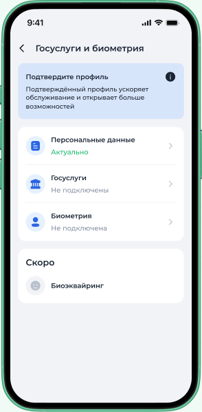
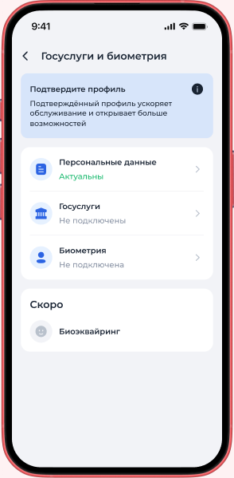
Экран успеха
На этом экране мы должны ясно дать понять пользователю, что он всё сделал правильно и пришёл к нужному результату. При этом, как правило, от него не требуется каких-то действительно сложных действий — в основном, это дело нескольких кликов или ввода необъёмных данных. Поэтому не стоит расхваливать пользователя — это будет звучать как издёвка.
На экране успеха всегда есть кнопка, которая даёт возможность его закрыть (например, «Закрыть»). Может быть и вторая кнопка — если предлагаем пользователю какое-либо альтернативное действие.
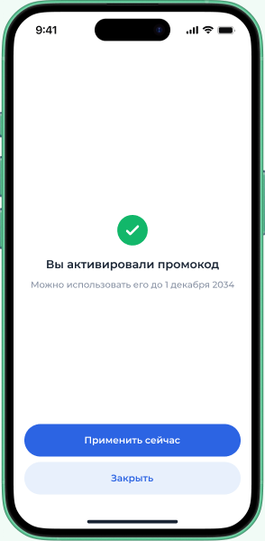
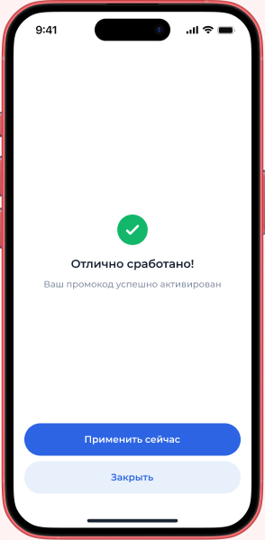
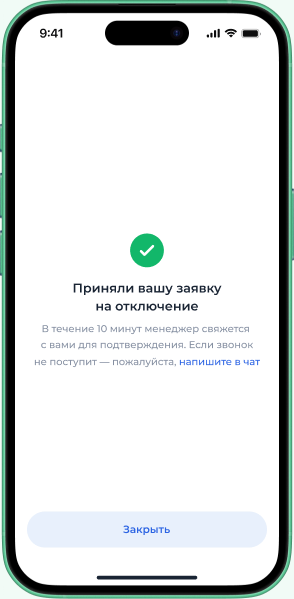
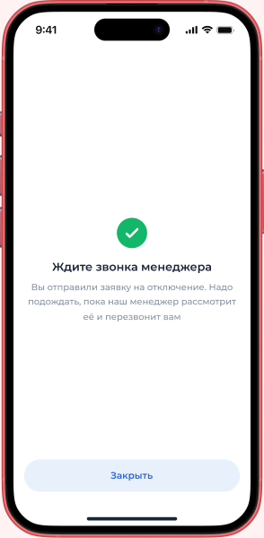
Экран ошибки
Экраны ошибок могут быть разные. Но для всех типов таких экранов мы стараемся соблюдать три правила:
- факт: сообщить об ошибке
- конкретизация: кратко и прозрачно объяснить, что именно пошло не так
- решение: предложить действие/варианты действий или обозначить, что делается для устранения ошибки
Мы не пугаем пользователя страшными формулировками и восклицательными знаками, не оставляем его в неведении. Стараемся проявлять дружелюбие за счёт информативности и предложения решения проблемы. При этом держим уважительную дистанцию, не уходя в панибратство и чрезмерное сочувствие.
На экране ошибки стараемся давать пользователю возможность действовать через кнопки — решить возникшую проблему (проверить данные, написать в поддержку, отключить VPN) и закрыть окно.
На экране ошибки всегда есть кнопка, которая даёт возможность его закрыть (например, «Закрыть»). Может быть и вторая кнопка — если предлагаем пользователю какое-либо альтернативное действие.
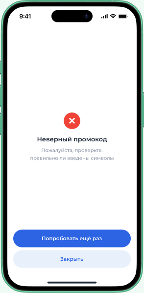
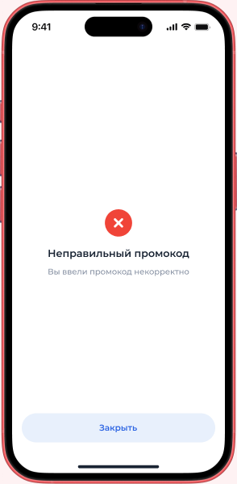
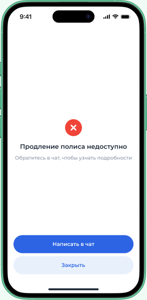
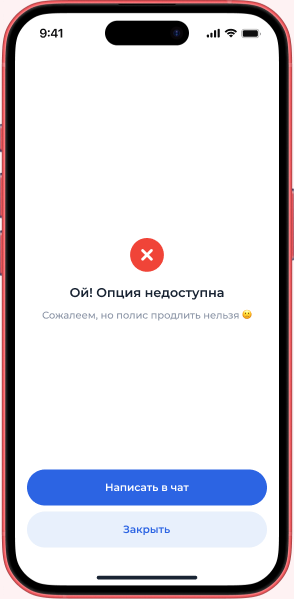
Пустые состояния
Для экранов пустых состояний стремимся применять практически те же принципы, что и для экранов ошибок:
- сообщаем о факте: список пуст, раздел в разработке, нет доступных акций, ничего не нашли по результатам поиска
- конкретизация + решение: уточняем детали и возможные действия — вы пока ничего не купили, выберите акции, повторите запрос и т.д. Задаёмся вопросом о полезности информации для пользователя
Кнопку добавляем, если пользователь может что-то сделать, чтобы появился контент.
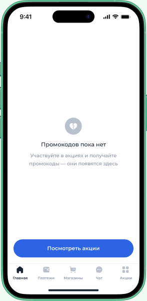
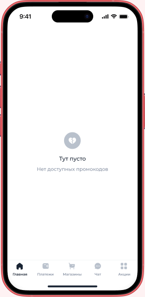
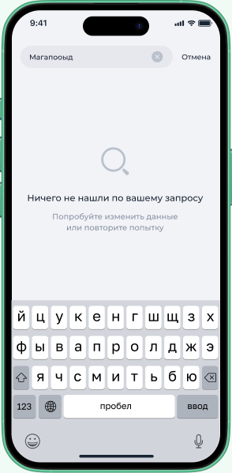
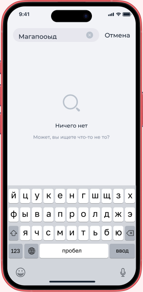
Любые длинные тексты
Длинными для интерфейса считаются все тексты, занимающие 4+ строки. Мы стараемся сделать их максимально удобочитаемыми — по возможности добавляем разметку смысловых блоков, нумерацию, списки.
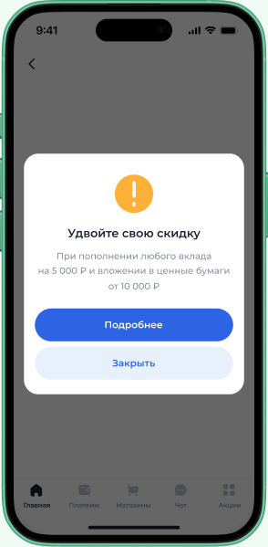
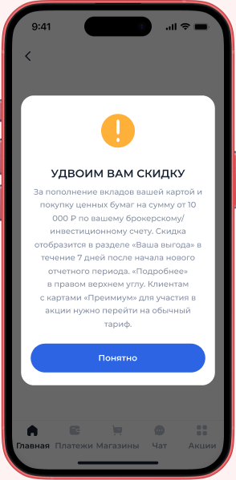
Тултипы (всплывающие подсказки)
Появляются при нажатии или наведении на отдельный интерфейсный элемент, который требует пояснения. В интерфейсах сайтов и мобильных приложений Совкомбанка чаще всего таким элементом выступает иконка информации в виде буквы i в круге.
Текст тултипа должен логично дополнять блок информации, к которой он относится. При этом, мы не помещаем туда гиперссылки или какие-либо важные данные, поскольку пользователь может не кликнуть по нему и упустить всё, что там содержится.
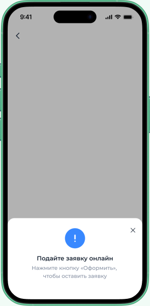
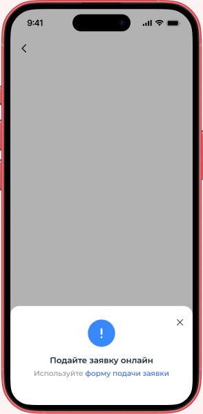
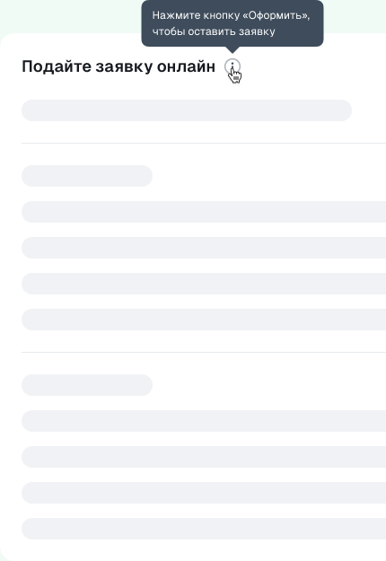
Списки
Списки в интерфейсных текстах оформляются не так, как в литературных. Для лёгкости считывания UX-эксперты рекомендуют в конце пунктов списка избавляться от знаков препинания — точки и точки с запятой.
Мы используем как нумерованные, так и маркированные списки в приложении, но чётко разграничиваем их применение. Нумерованные списки используем, если нам важно показать последовательность действий. Маркированные — если идёт обычное перечисление, в котором последовательность не важна.
Если заголовок списка — это законченное предложение, пункты пишем с заглавной (например, «как воспользоваться?:»). Если пункты продолжают это предложение — с маленькой (например, «КАСКО позволяет:»).
По возможности вместо текстовых элементов списков (цифры или точки) используем визуальную иконку — с цифрой, точкой или символом, соответствующим смыслу пункта.
Как воспользоваться?
- Нажмите кнопку «Применить»
- Получите кэшбэк 500 баллов на карту
Как воспользоваться?
- нажмите кнопку «Применить»;
- получите кэшбэк 500 баллов на карту.
Оформление ссылок
Ссылки, как и кнопки, нужны нам для того, чтобы перенаправить пользователя на другую страницу. Разница в том, что ссылка — вспомогательный элемент (даёт доп.информацию), а кнопка — целевой (переводит на следующий этап флоу).
В ссылку мы «оборачиваем» только целевое слово (желательно одно), без предлогов. Например, в футере с юридической информацией может быть по 2 – 3 ссылки, и если подчёркивать предлоги, текст станет одной сплошной ссылкой.
Из текста ссылки должно быть понятно, куда именно перейдёт пользователь. Не используем наречия места (тут, здесь).
Напишите в Поддержку
Соглашаюсь с условиями предоставления кредита и дополнительных услуг
Напишите в Поддержку
Соглашаюсь с условиями предоставления кредита и дополнительных услуг
Подробности акции читайте здесь
Сноски
Сноски — классический атрибут документации и других длинных, «тяжеловесных» текстов. Это примечания, дополнения, которые содержат две части: само обозначение сноски (* или цифры в верхнем индексе) в основном тексте и отдельный участок после него с самим примечанием.
В интерфейсных текстах они утяжеляют восприятие пользователя — поскольку вынуждают «перемещаться» по экрану и держать в голове весь смысл изначального предложения, откуда временно уводит сноска. Поэтому мы стараемся формулировать тексты так, чтобы уходить от их использования. Если формулировкой вопрос не решить, можно переносить дополнения на следующий шаг (например, «прятать» под кнопку «Подробные условия»), использовать скобки или, если есть техническая возможность, тултипы.
Примечание: если речь о юридических текстах, возможность упразднять сноски необходимо обсудить и утвердить с юристом. Если без сносок не обойтись, используем для обозначения знак *.
+1% к ставке Онлайн-копилки
Увеличенная базовая ставка начисляется на сумму до 1,5 млн ₽. С 3-го месяца, если это первая Копилка, с 1-го месяца — по повторно открытым Копилкам
+1% к ставке Онлайн-копилки
Увеличение на +1% базовой ставки по счету¹
¹ — Увеличенная базовая ставка начисляется на сумму до 1,5 млн ₽. с 3-го месяца, если это ваша первая Копилка, а также с 1-го месяца по повторно открытым Копилкам.
Маскировка части email
В процессах, связанных с подтверждением данных пользователя (например, аутентификацией или верификацией), может потребоваться маскировка части email — для сохранения конфиденциальности. Мы используем единую форму написания для таких маскировок: вне зависимости от количества фактического количества символов в адресе, открываем первую и последнюю букву до @ и обозначаем шифровку для середины 3-мя звёздочками. Например, для адреса privet@mail.ru маска будет выглядеть как p***t@example.ru.
p***t@example.ru
pr***t@example.ru
s***k@example.ru
s********k@example.ru
Названия интерфейсных элементов
Мы не используем родовые слова при указании названий кнопок или разделов — они излишни, их можно убрать без потери смысла.
Названия пишем в кавычках везде, кроме кнопок — в этом формате воздерживаемся от любых знаков препинания.
Примечание. Если в тексте идёт речь об инструменте или сервисе, сущность которого совпадает с названием раздела (например, чат и раздел «Чат») — указываем именно инструмент, т.е. пишем со строчной без кавычек.
Перейдите на наш сайт
Нажмите «Подробнее»
Перейдите по ссылке на наш сайт
Нажмите на кнопку «Подробнее»
Юридические тексты
- «Политика конфиденциальности», «политика персональных данных» или «политика» — пишем с маленькой буквы
- Цвет текста: если текст под кнопкой – серый, если в тогле — чёрный
- Размер шрифта: должен быть меньше, чем основной текст в интерфейсе
- Сохраняем гендерную нейтральность — «соглашаюсь», а не «согласен»
- Сохраняем консистентность формулировок — всегда пишем «соглашаюсь», не «даю согласие» или «выражаю согласие»)
С 1 сентября 2025 года по закону № 152-ФЗ, необходимо оформлять согласие на обработку персональных данных отдельно от других документов. В связи с этим:
- если в перечисленных документах есть политика персональных данных (ППД) — оформляем как тоглы и делаем отдельный тогл с ПД
- в зависимости от количества документов пишем по-разному:
1 документ:
- 1 документ — пишем под кнопкой название. Исключение — когда у документа длинное название. Тогда лучше сразу выносить его на отдельный экран
- 1 документ + ПД — 2 тогла
2 документа:
- 2 документа — пишем под кнопкой два названия
- 2 документа + ПД — 2 тогла, для ПД и «Документы»
3 и более документов:
- От 3 документов = Пишем «Документы» и выносим отдельно
- От 3 документов + ПД = Пишем 2 тогла, для ПД и «Документы»
Соглашаюсь с политикой обработки персональных данных для оказания страховых услуг
Соглашаюсь с документами
Нажимая «Открыть вклад», вы соглашаетесь с условиями обслуживания, условиями заявления-оферты и минимальной гарантированной ставкой, с политикой персональных данных
Пуш-уведомления
Пуш-уведомления делятся на операционные и информационные. В операционных заголовок «Халва-Совкомбанк» зафиксирован, меняется только основной текст. В информационных можно менять и заголовок, и основной тексты — в зависимости от задачи.
Чтобы пуш-уведомления отображались полностью на всех устройствах, придерживаемся следующих правил: заголовок — до 25 символов, основной текст — до 65 символов с пробелами. Если этого количества не хватает, можно написать больше — опираемся на здравый смысл и предыдущие уведомления.
В операционных пушах нельзя добавлять ссылки — поэтому пишем так, чтобы клиенту не нужно было искать дополнительную информацию.
СМС
Пишем текст СМС как можно короче, в идеале — до 70 символов с пробелами. Максимальная длина — до 134 символов. Текст в СМС сплошной — не получится оформить заголовок или список.
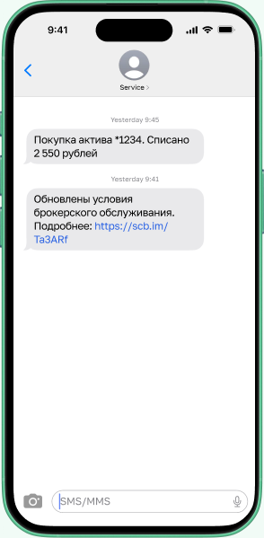
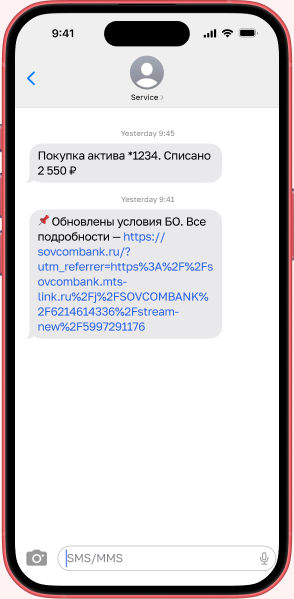